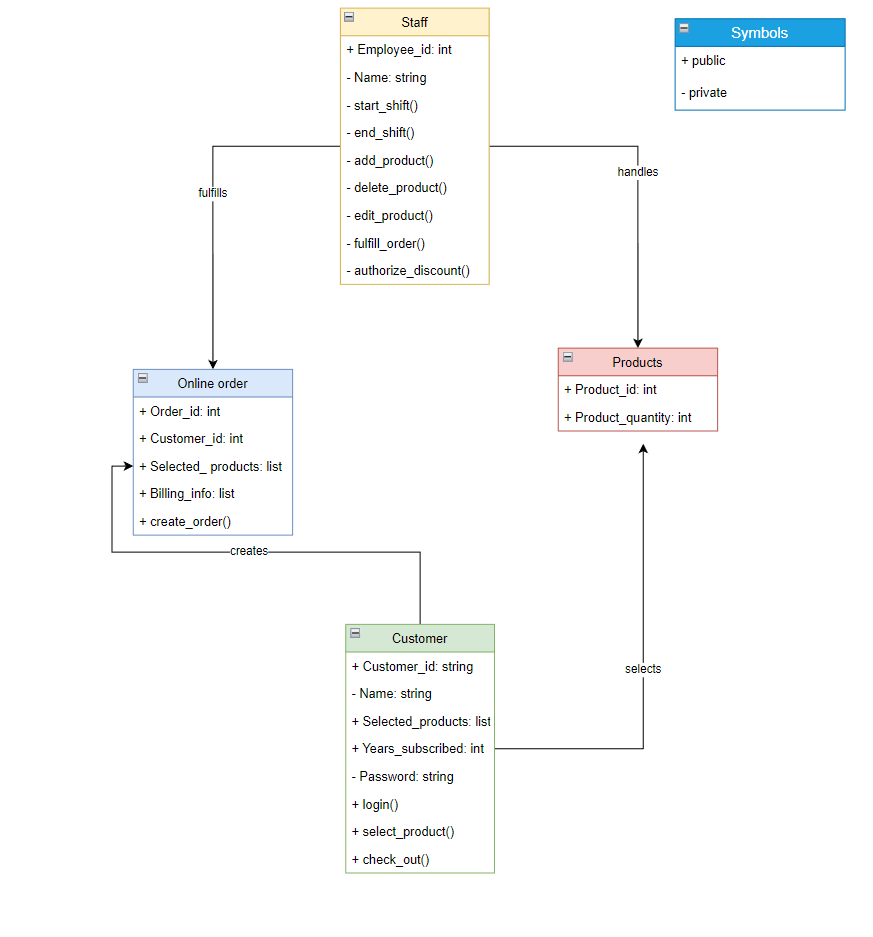
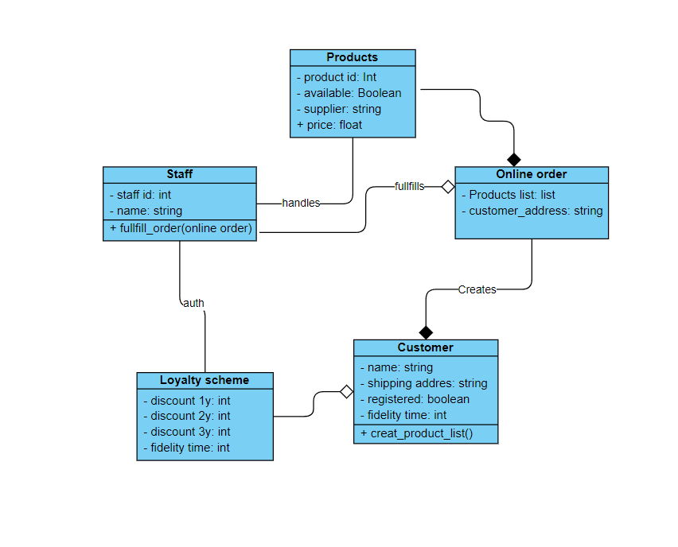
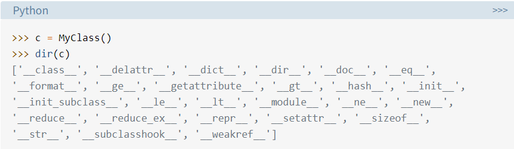
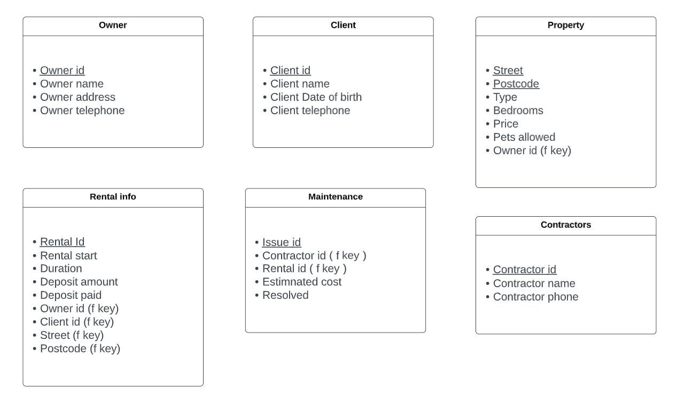

Module overview
Units 1-3
Please check the discussion summary for these weeks and others here.
The focus of the first three week's discussion was on information system failures. I found a very interesting
and infamous case happened to Cloudflare that started from a small operator error and turned into a massive data
leak. I also read an incredibly interesting post from one of my peers, a failure involving the Vancouver stock system
and an approssimation error. I pointed out in the response how the error was a known issue in similarly implemented
systems and how could have been avoided. I got a stimulating response on my post that pointed out how the bug really went live
when a different product was added to the tech stack and how better testing could have avoided it all.
We introduced Object Oriented design principles and UML fundamentals, here is my first supermarket diagram that doesn't
follow formal conventions:

Units 4-6
Here is the second version of the diagram with formal norms:

Inheritance, composition and polymorphism in Python? I love a basic example to explain inheritance in python: when you create a class,
any class, it will inherit all the members from the native object class of Python. Here you can see all the hidden members of a class that
has no attribute or method declared:

Credits to realpython.com
Composition is a bit more loose and means that a class utilizes the object of another class, in python the class that uses the other object
doesn't even need to know about the other class, you can just initialize a variable to "none" and then assign it the object. Lastly, there is polymorphism,
where you can overwrite methods inherited from the parent class but that doesn't fit the child class fully.
Unit 7-9
Please check the discussion summary for these weeks and others here. Database design follows up UML fundamentals of the previous weeks. There we can find the three normal forms of a Database explained in a famous sentence by their own creator: "The key, the whole key and nothing but the key". E.F. Codd. Database design from week 7: 
NoSQL vs SQL
After nice confrontation and really interesting posts by all my peers this debate is a really fundamental part of the field. While there is not a winner in all the aspects every database technology has its strengths, while NoSQL is better at managing big amounts of data, especially unordered and social networks type of data, Twitter interesting post on its graph DB , SQL is still a fundamental part of our systems, and competition is always a good push for better technologies.Documents (ERD diag and assignments) of these weeks can be found in the mid module assignment folder in the OOP-Information-system-module repo in this github.
Unit 10 - 12
OOP system implementation of a booking system can be found Here
Sarting getting familiar with web development in python, talking about server routes it is very similar to what
I'm used to in nodeJS and express but I can't wait to learn more as I'm writing this.
Blog post from week 12 about NoSQL databases, an extremely interesting topic.